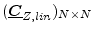
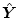

The noise stemming from the linear subcircuit is calculated
in two steps:
- An AC noise analysis (see section 5.2) is
performed for the interconnecting nodes of linear and non-linear
subcircuit. This results in the noise-voltage correlation matrix
.
- The matrix
is converted into a noise-current correlation matrix (see section
2.4.2):
where
 is taken from equation 7.2.
Remark: If no explicit noise sources exist in the linear subcircuit,
can be computed
much faster by using Bosma's theorem (equation 2.38).
This document was generated by Stefan Jahn on 2007-12-30 using latex2html.